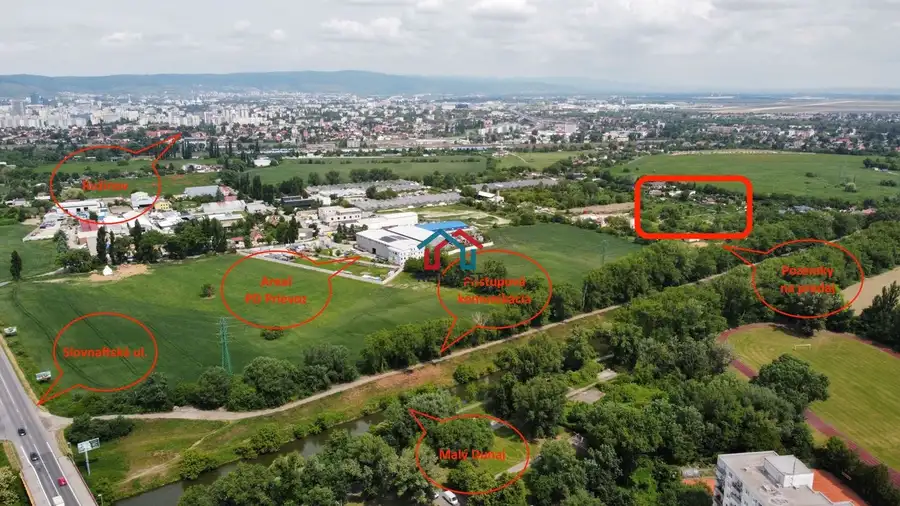
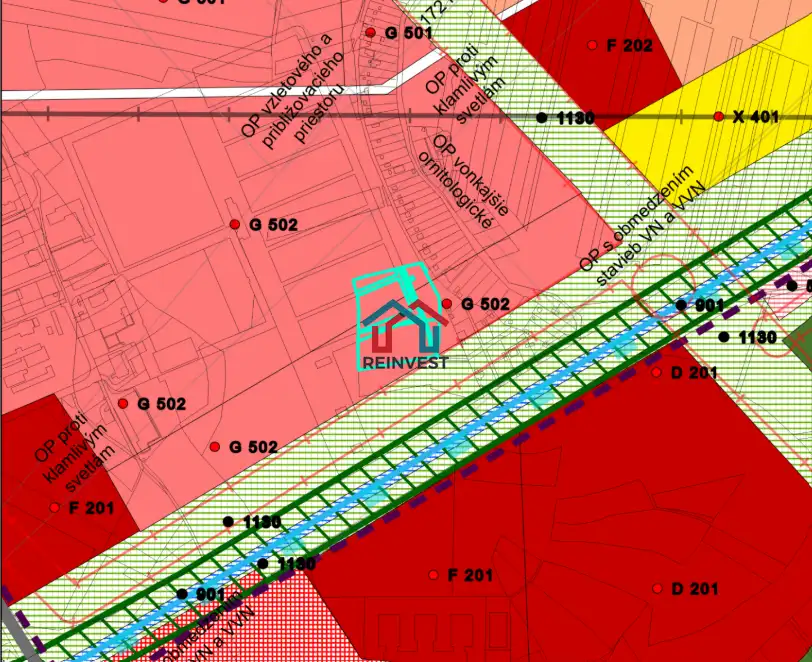
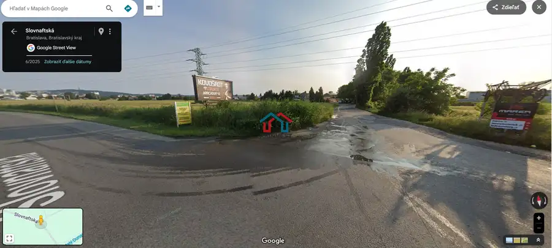
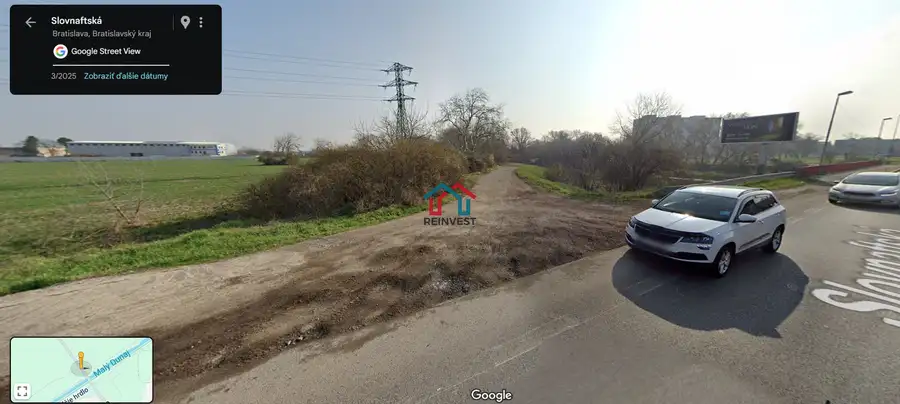
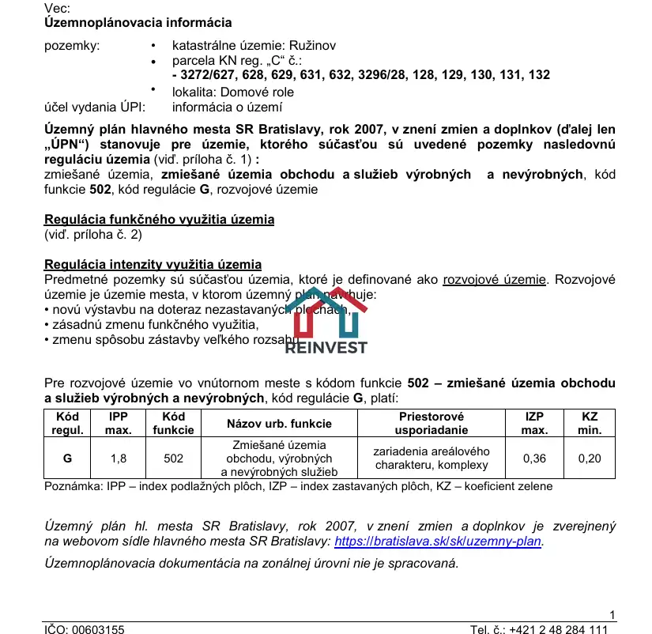
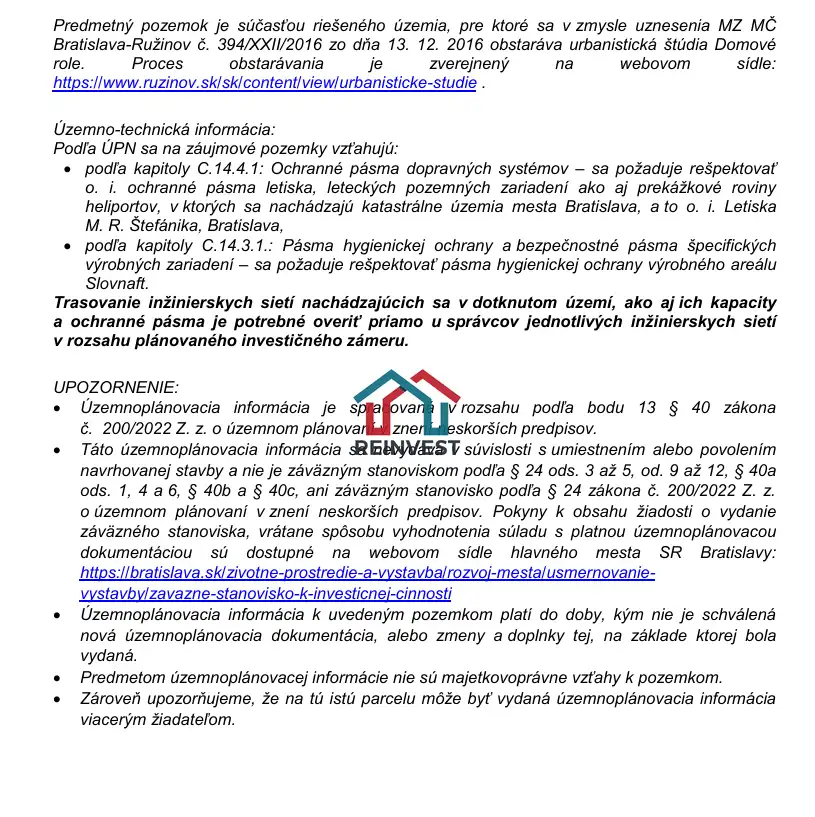

Na predaj rozľahlý pozemok – 9 785 m² v rozvojovom území Ružinova !
Ružinov, Bratislava







- Plocha9785 m²
O nehnuteľnosti
RK REINVEST s.r.o. Vám vo výhradnom zastúpení majiteľov ponúka na predaj Lukratívnu investičnú príležitosť v podobe výnimočného pozemku na predaj v obľúbenej a rozvíjajúcej sa lokalite Bratislava – Ružinov, v blízkosti ulice Slovnaftskej a Domové role. Prečo si tento pozemok zamilujete?TOP lokalita – rýchly výjazd na R7/D4, 10 min. do centra!Približne Štvorcový tvar & priame napojenie na spevnenú betónovú komunikáciu Domové roleBez tiarch, ihneď k dispozícii – všetky parcely na jednom LVPredmetné pozemky sú súčasťou územia, ktoré je definované ako rozvojové územie. Rozvojové územie je územie mesta, v ktorom územný plán navrhuje: • novú výstavbu na doteraz nezastavaných plochách, • zásadnú zmenu funkčného využitia, • zmenu spôsobu zástavby veľkého rozsahu. Rastúca hodnota + Aktuálny rozvoj v okolí:Urbanistická štúdia Domové role – proces obstarávania zverejnený (štúdia sa spracúva)Vlčie Maky – 16 mil. €, 147 bytov + retail ⇒ nové chodníky, cyklotrasa, MHDĎalšie zámery (Sedmokrásky, infraštruktúra) = budúci mestský sub‑centro RužinovaÚzemný plán H 502 – čo môžete postaviť?Povolené: obchodné prevádzky, výrobné/nevýrobné služby, logistické a distribučné centrá, showroomy, zeleň, technická a dopravná infraštruktúra.Obmedzene prípustné: byty v polyfunkcii, súvisiaca občianska vybavenosť, zberné dvory.Neprípustné: samostatné bytové domy, rekreačné stavby, ťažký priemysel.Ideálne využitie:Logistický / distribučný park so showroomomVýrobno‑servisné centrum s administratívouPolyfunkčný komplex (obchod + byty v obmedzenom rozsahu)Investičné držanie – zhodnotenie po schválení urbanistickej štúdieKompletný právny servis pri prevode vlastníckeho práva nehnuteľnosti je zahrnutý v cene. V prípade potreby pomôžeme s výberom hypotéky, poistenia či investičného poradenstva.Pre obhliadku ma neváhajte kontaktovať – rád Vás touto nehnuteľnosťou osobne prevediem!Kontakt:Mgr. Ján Hvozdík RSc.real estate consultantcertifikovaný realitný maklérčlen Realitnej Únie Slovenskej republikykonateľREINVEST s.r.o.0911 323 909janhvozdik@reinvest-reality.com
Parametre
- Druh
- Komerčná zóna
- Dátum zverejnenia
- 30. 07. 2025
- Dĺžka pozemku
- 100
- Elektrina
- Pri pozemku - 400 V
- Funkčné využitie
- Ľahká priemyselná výstavba
- Odpadové vody
- Nedostupné
- Plocha pozemku
- 9785 m²
- Plyn
- Nedostupné
- Pripravenosť k výstavbe
- Schválené v územnom pláne
- Prístupová komunikácia
- Betónová
- Terén pozemku
- Rovinatý
- Typ
- Predaj
- Voda
- Nedostupné
- Územie
- Extravilán
- Šírka pozemku
- 100